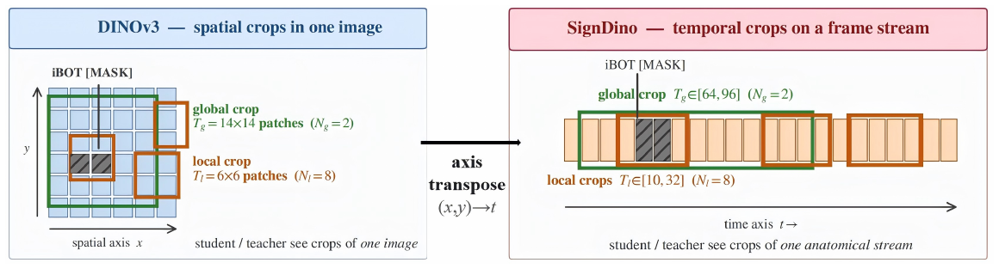
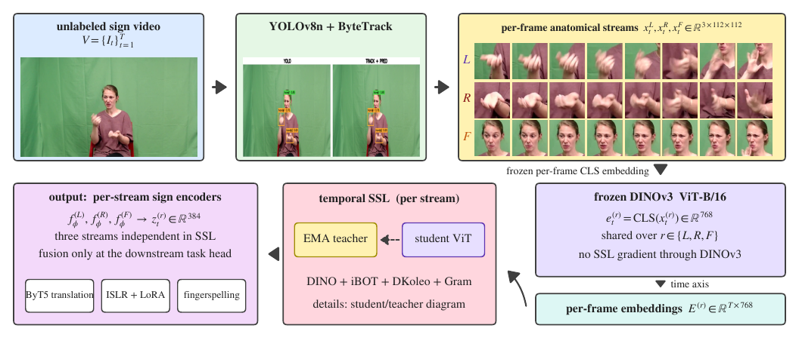
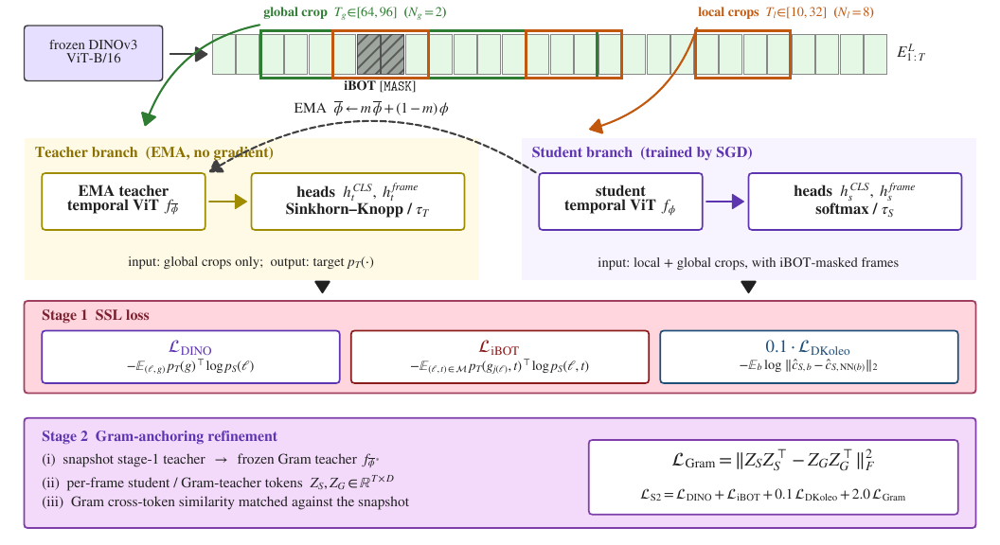
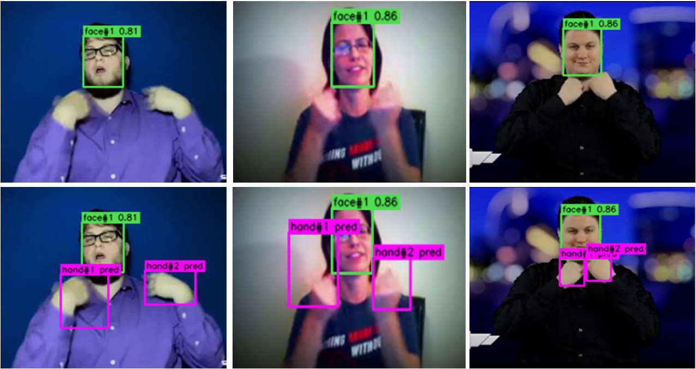
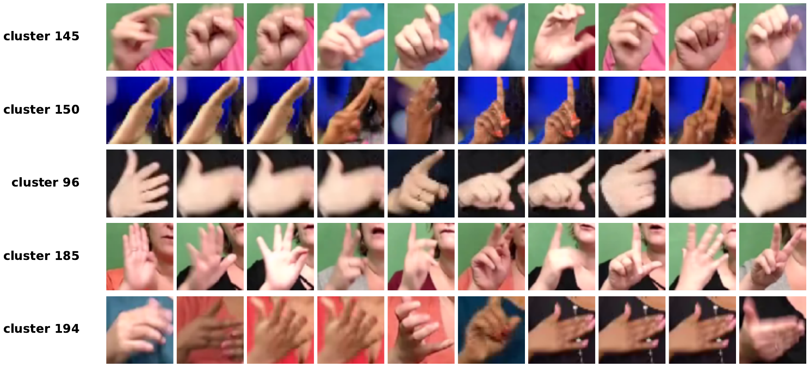
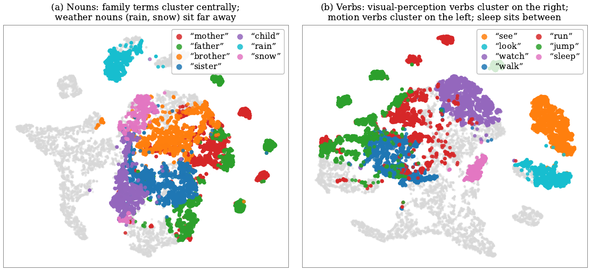

Self-Supervised Sign Language Representation Learning
via Temporal-Axis Self-Distillation
New York University Abu Dhabi
† corresponding author · jh10472@nyu.edu

Tg ∈ [64, 96]) and local
(Tl ∈ [10, 32]) crops along the tracked hand and face rows of a single
anatomical stream, with iBOT masks on a few frame slots inside the local crop.Self-supervised vision learns structure by playing a local–global game across the spatial axis of an image: a crop and the whole picture are asked to agree. Structured motion has an axis of its own, and the same game should be playable along it — where the counterpart of a local crop is not another view of the same frame, but a shorter temporal view of the same tracked part.
We introduce SignDino, which moves the DINOv3 student–teacher recipe from the spatial domain of image crops to the temporal domain of tracked streams. Two properties of a moving body drive the design, and neither is specific to sign: motion is produced by a small set of anatomically distinct parts, and meaning lives in how those parts are organised over time. Each video is therefore decomposed into left-hand, right-hand and face streams by a detector-first YOLOv8n + ByteTrack pipeline; a frozen DINOv3 ViT-B/16 embeds each per-frame crop once; and the only trained components are lightweight temporal Transformers forming the student and EMA teacher.
Every term in the objective — temporal DINO self-distillation, iBOT-style masked-frame prediction, KoLeo feature spreading, Gram anchoring of the frame-to-frame similarity structure — is inherited unchanged from image self-supervision. What changed is the axis the local–global game is played on. Strong image-level primitives stay fixed and the model learns only how articulator states evolve across time. Sign language is where we evaluate rather than what the method was built to fit: across sign-to-English translation, isolated sign recognition and fingerspelling detection, SignDino provides a strong public self-supervised representation and is competitive with or ahead of the state of the art under matched downstream evaluation — and the phonological probe, where all sixteen ASL-Lex features improve, is the result that says what the representation actually learned.
Per-frame articulator tokens replace spatial patch tokens; multi-temporal-crop replaces multi-spatial-crop; iBOT masks frames rather than patches.
Left hand, right hand and face are encoded independently over time and fused only at the downstream head, so each stream learns its own dynamics.
YOLOv8n + ByteTrack recovers hands that per-frame detection misses under motion blur and self-occlusion, instead of relying on pose-driven crops.
SignDino is three independently trained per-stream SSL encoders sharing one upstream anatomical-crop pipeline. A frozen DINOv3 ViT-B/16 turns every per-frame crop into a 768-d CLS vector once, and the vectors are cached; the student and teacher are small temporal Transformers on top of that cache. Only ≈30M parameters ever receive an SSL gradient, and the image backbone receives none.

The teacher sees only long temporal crops of a stream; the student sees both long and short
crops, with a random fraction of frame positions replaced by a learnable [MASK]
token. Stage 1 combines the crop-level DINO cross-entropy, the frame-level iBOT cross-entropy and
the DKoleo spreading term. Stage 2 freezes a snapshot of the teacher as a Gram
teacher and adds a loss that matches the student's frame-to-frame similarity matrix to the
snapshot's — preserving which frames of a clip are alike, which is the structure that
fingerspelling and continuous translation rely on.

Single-frame detection drops hands under fast motion and self-occlusion. ByteTrack's Kalman fill recovers them, reaching ~95% per-frame hand detection on How2Sign. Removing it costs −1.5 BLEU on How2Sign and −0.094 R@1 on ASL Citizen.

Everything below follows the SHuBERT public-data protocol: the same 984 source hours of decontaminated YouTube-ASL, the same downstream datasets, task heads, schedules and metrics. Only the upstream representation changes.
| Method | PT hrs | How2Sign BLEU | How2Sign BLEURT | OpenASL BLEU | FLEURS-ASL BLEU |
|---|---|---|---|---|---|
| YouTube-ASL fine-tune | 984 | 12.4 | 46.6 | — | — |
| YouTube-SL-25 | 3207 | 15.4 | 47.9 | — | 4.4 |
| SSVP-SLT | 1054 | 15.5 | 49.6 | — | — |
| Uni-Sign | 984 | 14.9 | 49.4 | 23.1 | — |
| SHuBERT | 984 | 16.2 | 49.9 | 23.2 | 4.7 |
| SignDino (frozen) | 984 | 16.8 | 50.4 | 23.6 | 4.9 |
| SignDino (live fine-tune) | 984 | 17.9 | 51.3 | 24.5 | 5.3 |
| Method | Trainable | ASL Citizen R@1 | Sem-Lex R@1 | WLASL2000 P-I | ASL-STEM mIoU |
|---|---|---|---|---|---|
| I3D | 25M | 0.63 | — | — | — |
| SignCLIP | 217M | 0.60 | 0.30 | — | — |
| Uni-Sign | 580M | — | — | 63.52 | — |
| SHuBERT (rank-1 LoRA) | 0.17M | 0.65 | 0.54 | 60.90 | 0.40 |
| SignDino (rank-1 LoRA) | 0.17M | 0.67 | 0.56 | 66.9 | 0.41 |
| SignDino (full fine-tune) | all | 0.704 | 0.593 | 68.5 | 0.43 |
Sixteen ASL-Lex 2.0 feature classifiers, trained on frozen features, ask whether the representation preserves sub-lexical structure rather than only whole-sign identity. SignDino improves on every one of the sixteen features, with the largest gains on the temporally articulated ones — path movement, wrist twist, repeated movement.
| Average over 16 features | Sem-Lex R@1 | ASL Citizen R@1 |
|---|---|---|
| SHuBERT | 79.38 | 85.02 |
| SignDino | 87.64 +8.26 | 91.85 +6.83 |


The full implementation — SSL losses, the temporal encoder, the multi-temporal-crop sampler, the embedding cache, and all three downstream heads — is on GitHub under the MIT licence. The YAML configs match the paper's hyperparameter card line by line.
git clone https://github.com/junyi2005/signdino.git
cd signdino && pip install -r requirements.txt
python smoke_test.py # synthetic end-to-end check, no data needed
python preprocess/cache_embeddings.py --crop-root /path/to/CROPS # one-off frozen-DINOv3 cache
python train.py --config configs/pretrain.yaml --stream lh --exp-name pretrain_lh # stage 1
python train.py --config configs/refine.yaml --stream lh --exp-name refine_lh \
--init-ckpt runs/pretrain_lh/ckpt_e100.pt # stage 2
Datasets and third-party checkpoints (DINOv3, ByT5-Base, BLEURT-20, the YOLOv8n detectors) are not redistributed here; obtain each from its official release under its own terms.
@article{hu2026signdino,
title = {SignDino: Self-Supervised Sign Language Representation Learning
via Temporal-Axis Self-Distillation},
author = {Hu, Junyi and He, Zhewen and Huang, Haomian and Li, Zhenhua and
Li, Zhifei and Fang, Yi},
journal = {arXiv preprint},
year = {2026}
}